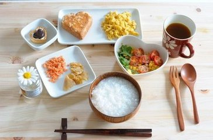

-

如今人们的饮食已经越来越向健康靠拢，而且一日之计在于晨，早餐的重要性无需赘言。 而健康早餐所要具备的条件就是要有优质的蛋白质，较全面的碳水化合物以及矿物质。 美好的早餐开启元气满满的一天！
-
民以食为天，明代养生学家高濂说：饮食,是维持人体生命活动的根本条件。一语道出“食”的重要性。 人的身体之中，阴阳得以运用，五行得以相生，各个系统、器官得以发挥正常的功能，无不由于摄入饮食而获得动力。
-

柠檬水是一种以柠檬调味的水饮料，起源于17世纪的法国巴黎。部份柠檬水饮料加入了二氧化碳制成汽水， 最著名的品牌是雪碧和七喜。
-

秋季吃螃蟹有什么好处？秋季是河蟹大量供应的季节，河蟹味美，营养丰富，含有大量蛋白质及钙、锌， 还含有较多的铁、维生素等。螃蟹肉质细嫩，味道鲜美，是人们喜食佳品。
-

辣椒营养丰富，有许多保健作用。首先，辣椒中的维生素种类和含量异常丰富。 小小一颗辣椒中，维生素AB族维生素、等维生素全都包括了。 其次，辣椒中还含有钙和铁等矿物质以及膳食纤维。经总结，吃辣椒共有10大好处。
-
民以食为天，明代养生学家高濂说：饮食，是维持人体生命活动的根本条件。一语道出“食”的重 要性。 人的身体之中，阴阳得以运用五行得以相生，各个系统、器官得以发挥正常的功能，无不由于摄入饮食而获得动力。